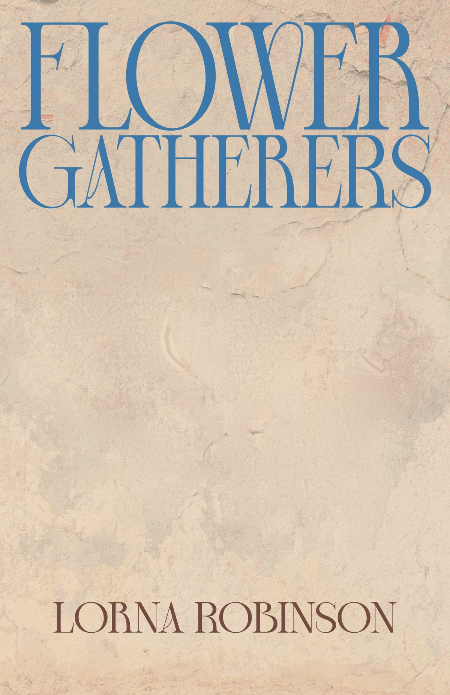
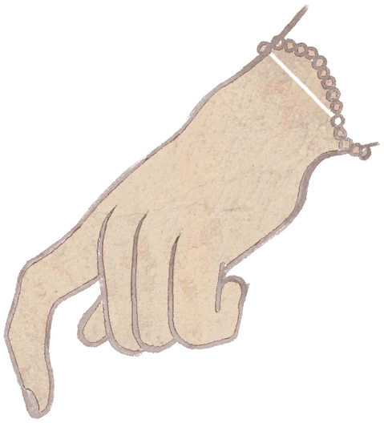
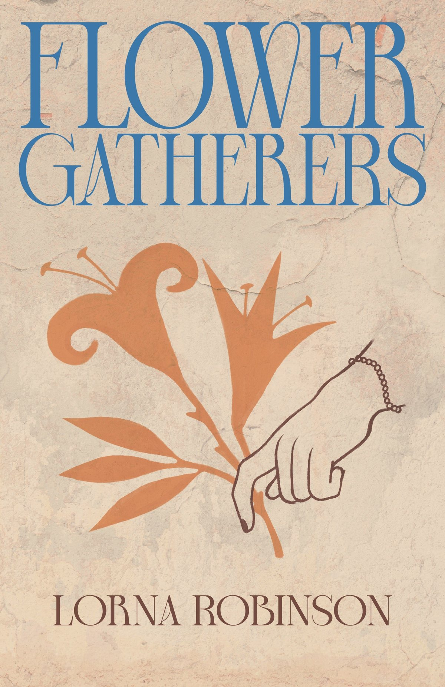

Flower Gatherers
A Minoan-inspired novel exploring themes of motherhood, growing up, and what can really be known about the distant past.
Two women separated by millennia
Key chapters are set in the Ashmolean Museum's Aegean World Gallery. Striking illustrations in each chapter by artist Lydia Hall cast contemporary scenes in Minoan settings.
Cover and illustrations by Lydia Hall.
A lonely researcher discovers engravings which overturn the understanding of an ancient civilisation. A teenager growing up on a small island makes a decision which will change her life forever.
Flower Gatherers follows two stories of discovery and loss, as the lives of two women separated by millennia become deeply intertwined. Blending history and imagination, the novel explores the repeating patterns of human relationships, the persistent quest for knowledge and the limits of our understanding.
Flower Gatherers is one of five books. See them all on the shelf.